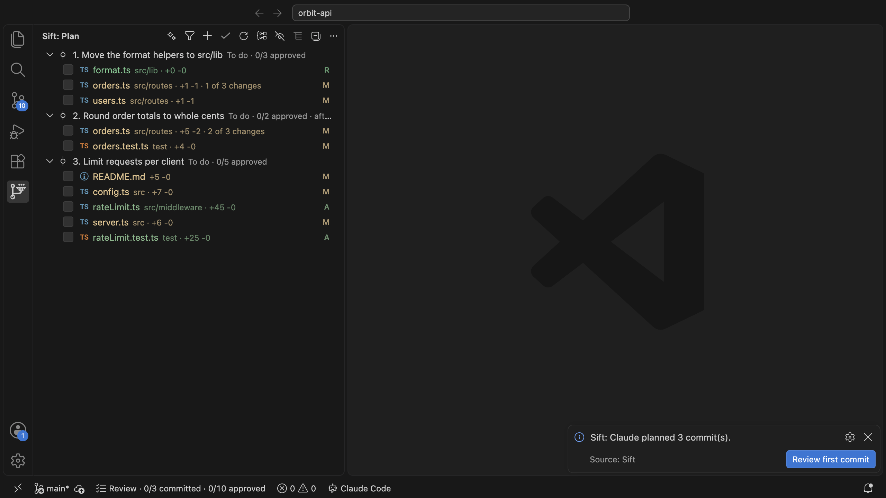
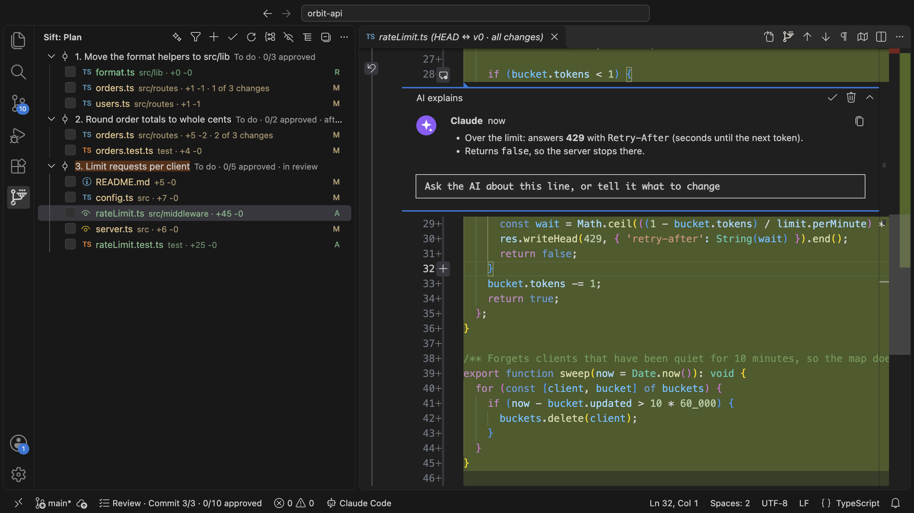
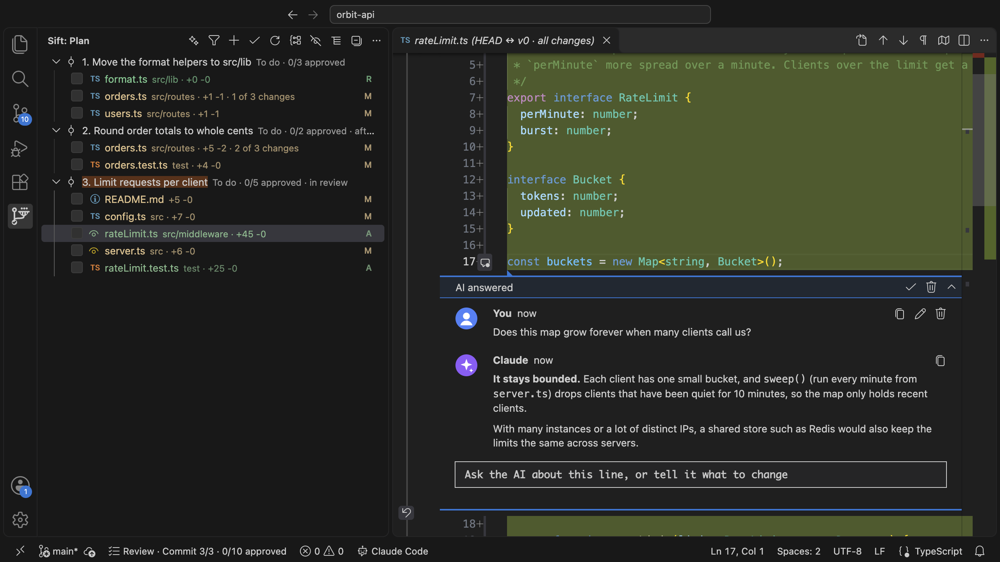
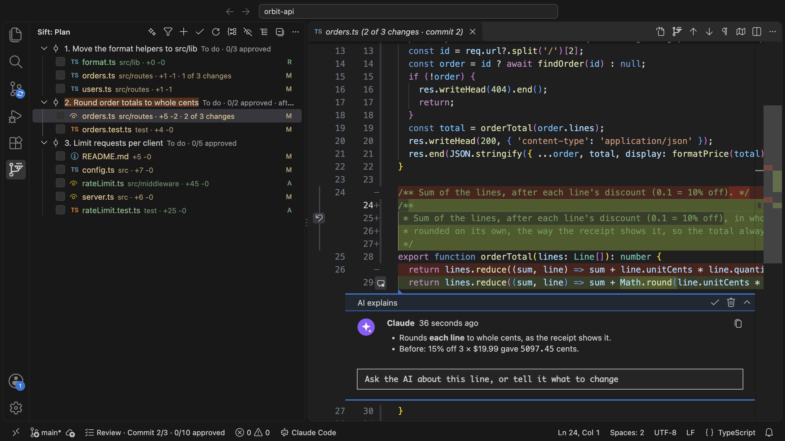
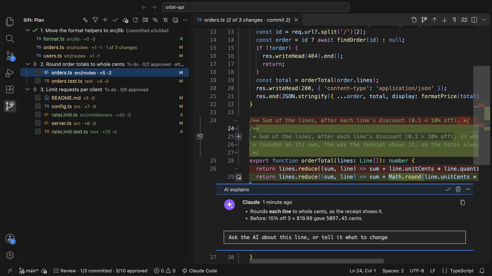

Turn one giant diff into reviewed commits.
Your AI just changed 40 files. Sift plans them into small, atomic commits, explains what matters, and walks you through each one in VS Code’s own diff.
Works with Claude Code, Codex, Gemini CLI, GitHub Copilot, or any command. No telemetry.
The AI groups your changes
Ordered commits with an intent, risk notes and explanations, in one click.
You review each commit
File by file in the native diff. Ask about any line; the answer lands in the thread.
Sift commits what you approved
Exactly those changes, with your git identity and hooks. Then push.
Review like a pull request, before you even commit.
Big AI-made change sets are impossible to read as one diff and a mess as one commit. Sift gives them a history worth keeping.
A commit plan in one click
Sift asks the AI to split every changed file into small commits, in an order that builds.
- Each commit gets an intent and risk notes
- Dependencies keep commits in a safe order
- Drag files between commits to adjust

Every change, explained where it happens
Notes from the AI sit on the lines that carry intent or risk, in VS Code’s own diff editor. Go-to-definition and editing keep working.

Ask about any line
Comment on a line to ask a question or ask for a change. The AI answers in the thread, or edits the code and says what it changed.
- Markdown, Cmd+Enter to send
- See only what changed since your last look

One file, two commits
A file that mixes a refactor and a fix doesn’t have to go in one commit. Move single changes to another commit; each part gets its own diff and approval. Renames show once and keep their history.

Approve, commit, push
Tick the files you’re happy with. Sift commits exactly that, and nothing you staged by hand moves.
- Undo a commit, revert a pushed one, or amend into one
- Pull and push through VS Code’s Git

Bring the AI you already use.
Sift runs your AI with your own login. No account, no API key to paste, no server in between.
Agents can drive it too.
Anything you do in Sift, an agent can do: plan commits, move or split changes. Sift installs a sift skill for Claude Code, Codex or Gemini CLI, gives Copilot its own tools, and picks up a plan file from any tool, with no reload.
// .sift/plan.json { "commits": [ { "message": "Move the format helpers to src/lib", "files": ["src/lib/format.ts", "src/routes/users.ts"] }, { "message": "Round order totals to whole cents", "files": [ { "path": "src/routes/orders.ts", "lines": [[14, 20]] } ], "dependsOn": [1] } ] }
Git stays yours.
Only your click commits
The AI never stages or commits. Sift commits what you approved, with your identity and hooks.
Your staging is untouched
Sift commits through a private index, so what you staged stays staged.
No telemetry
Your changes go only to the AI you chose, and only when you ask it to plan or answer.
Give your next big change a history worth keeping.
Free and open source. VS Code 1.95 or later.